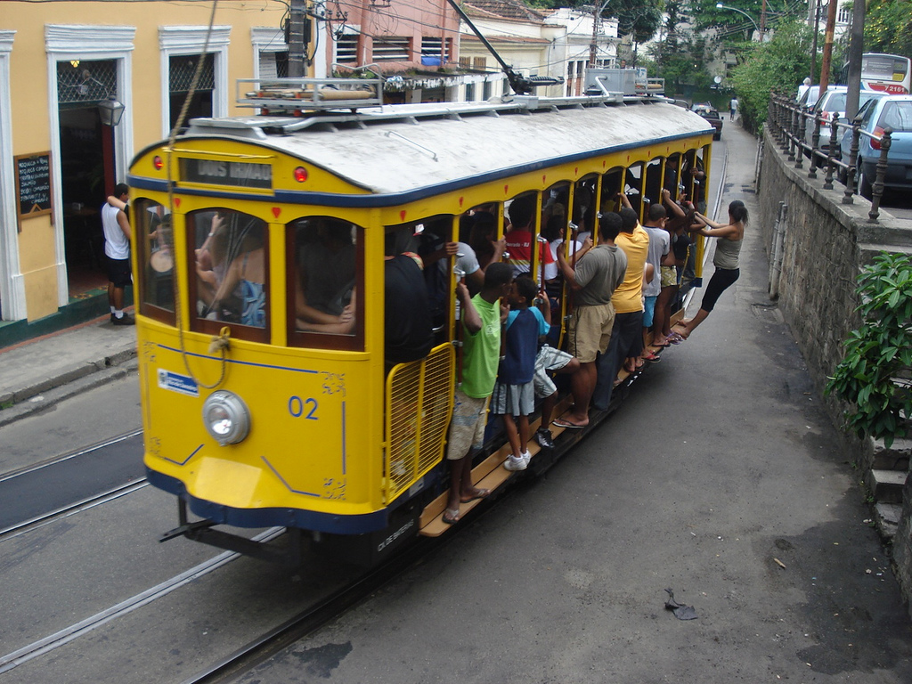
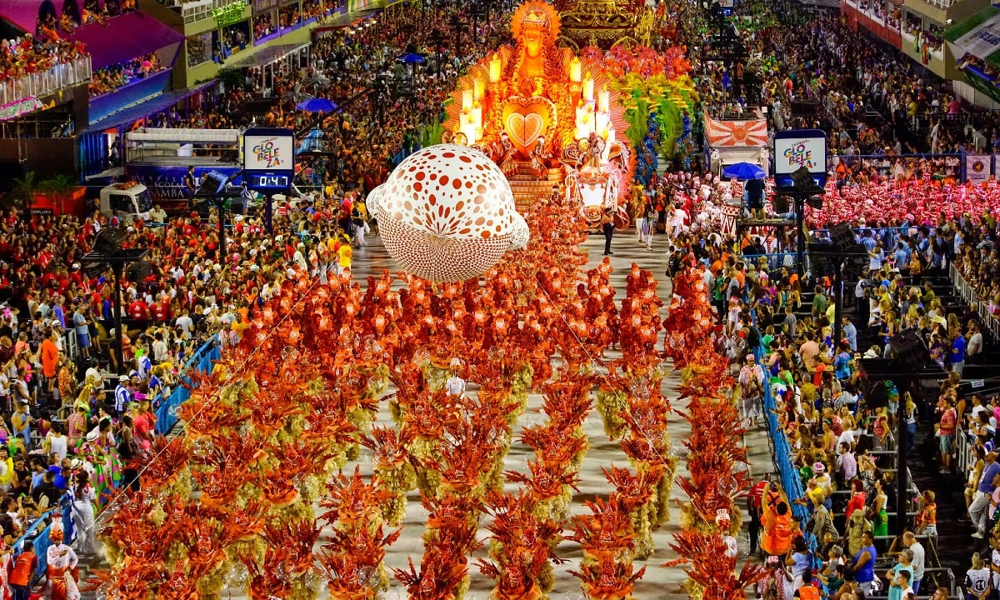
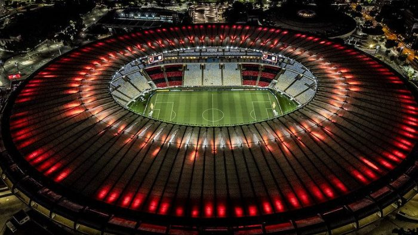

Rio de Janeiro |
|---|
Rio de Janeiro |
|---|
|  |
CarnavalO Carnaval do Rio de Janeiro é uma das festas mais vibrantes e famosas do mundo, atraindo milhões de pessoas a cada ano para celebrar essa festividade de cores, música e dança. Com raízes profundas na cultura brasileira, o Carnaval carioca é uma expressão única de alegria e diversidade. O evento ocorre anualmente, culminando em um intenso período de festas que começa oficialmente 40 dias antes da Páscoa, marcando o início da Quaresma cristã. No Rio de Janeiro, as celebrações tomam as ruas da cidade, com destaque para os desfiles das escolas de samba no Sambódromo. O Sambódromo é uma icônica passarela de desfiles projetada pelo arquiteto Oscar Niemeyer, onde as escolas de samba competem em uma extravagante exibição de trajes elaborados, carros alegóricos criativos e performances coreografadas. Cada escola de samba escolhe um tema para o desfile, e a competição é acirrada, envolvendo meses de preparação e ensaios. A atmosfera é eletrizante, com multidões entusiásticas aplaudindo e cantando junto com os desfiles. |
|
Além do Sambódromo, o Carnaval também toma as ruas em blocos de carnaval. Esses blocos são grupos de pessoas que se reúnem para dançar e cantar em locais públicos, como praças e avenidas. Eles variam em tamanho, desde pequenos grupos até multidões enormes, e representam uma forma mais espontânea e informal de participar das festividades. A música é um elemento central do Carnaval carioca, e o samba é o ritmo que domina a festa. As escolas de samba desenvolvem enredos acompanhados de músicas cativantes, que são cantadas por milhares de pessoas durante os desfiles. As marchinhas de Carnaval também são muito populares, com letras animadas e melodias contagiantes que todos conhecem e cantam junto. As festividades do Carnaval no Rio de Janeiro não se limitam apenas ao Sambódromo e aos blocos de carnaval. A cidade inteira entra no espírito festivo, com festas em bairros, clubes e praias. A alegria é contagiante, e durante esses dias, as diferenças sociais e culturais são temporariamente deixadas de lado em prol da celebração compartilhada. |
 |

 |
Bares da LapaOs bares da Lapa, no Rio de Janeiro, constituem um dos cenários culturais mais vibrantes e emblemáticos da cidade. Localizada no bairro da Lapa, essa região é conhecida por sua vida noturna animada, diversidade musical e atmosfera única. A área abriga uma coleção de bares históricos e casas de shows que refletem a rica herança cultural e musical do Rio. Os bares da Lapa estão inseridos em edifícios históricos e casarões antigos, muitos dos quais datam do século XIX. Esses espaços tradicionais foram transformados em locais de encontro, onde moradores locais e turistas se misturam para apreciar música ao vivo, dançar e desfrutar de uma variedade de bebidas e petiscos. A arquitetura e o ambiente pitoresco acrescentam um toque especial à experiência, com suas fachadas coloridas e autênticas. A música é uma das características mais marcantes da Lapa. Diferentes bares oferecem gêneros musicais diversos, desde samba e choro até rock, MPB (Música Popular Brasileira) e eletrônica. O famoso "Arcos da Lapa", um aqueduto histórico que domina a paisagem, muitas vezes serve como pano de fundo para apresentações ao ar livre e eventos especiais. Um dos pontos altos da vida noturna na Lapa é a "Lapa 40 Graus", uma casa de shows que oferece uma programação variada de música ao vivo, dança e entretenimento. Além disso, o "Circo Voador" é uma referência no cenário musical do Rio, apresentando shows de bandas locais e internacionais em um ambiente descontraído e inspirador. A Lapa também é conhecida por sua animada "Feira Rio Antigo", que acontece no primeiro sábado de cada mês. Durante a feira, as ruas são preenchidas com barracas que vendem antiguidades, artesanato e obras de arte, atraindo moradores e turistas em busca de tesouros únicos. |